Fréttir
Fréttir og viðburðir
Nýjustu fréttir af verkefnum, viðurkenningum og viðburðum HD.
30. október 2026
HD Framúrskarandi fyrirtæki tíunda árið í röð
HD hefur hlotið viðurkenningu Creditinfo sem Framúrskarandi fyrirtæki 2026, tíunda árið í röð. Fyrirtækið er þar með í hópi þeirra 2,5% íslenskra fyrirtækja sem uppfylla ströng ski…
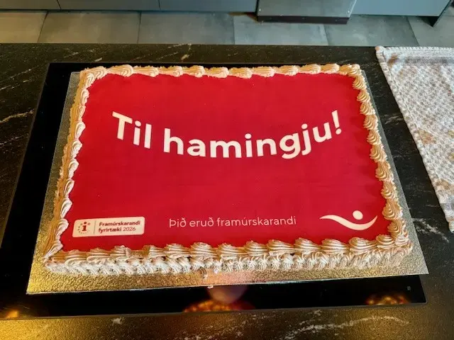
28. september 2026
HD og Tero saman á Lagarlífi
HD tekur þátt í Lagarlífi í Hörpu þar sem fyrirtækið mun, ásamt Tero, sýna hvernig ástandsgreining, viðhaldsþjónusta og viðhaldsstjórnun geta unnið saman að auknu rekstraröryggi.

17. september 2026
Áður en frávik verður að bilun
HD og hugbúnaðarfyrirtækið Tero hafa tekið höndum saman um að tengja ástandsvöktun og -greiningar á vélbúnaði, við viðhaldsstjórnun. Markmiðið er að greina frávik snemma og tryggja…

28. ágúst 2026
HD á IceFish 2026
Á sýningunni kynnir HD heildstæða iðn- og tækniþjónustu fyrir sjávarútveg og fiskeldi, þar á meðal ástandsvöktun og -greiningar, skipaviðgerðir, stálsmíði, vélsmíði og búnaðarlausn…
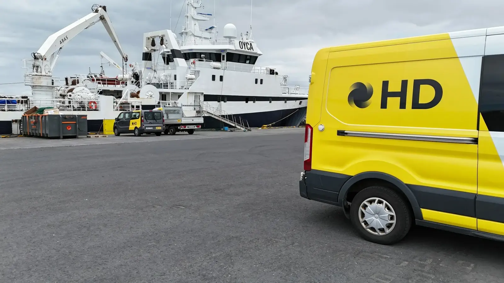
20. júlí 2026
Handverk sem vísar veginn
Það er alltaf ánægjulegt þegar þekking, fagmennska og handverk starfsfólks HD fá að njóta sín í verkefnum sem skilja eftir sig varanleg spor.
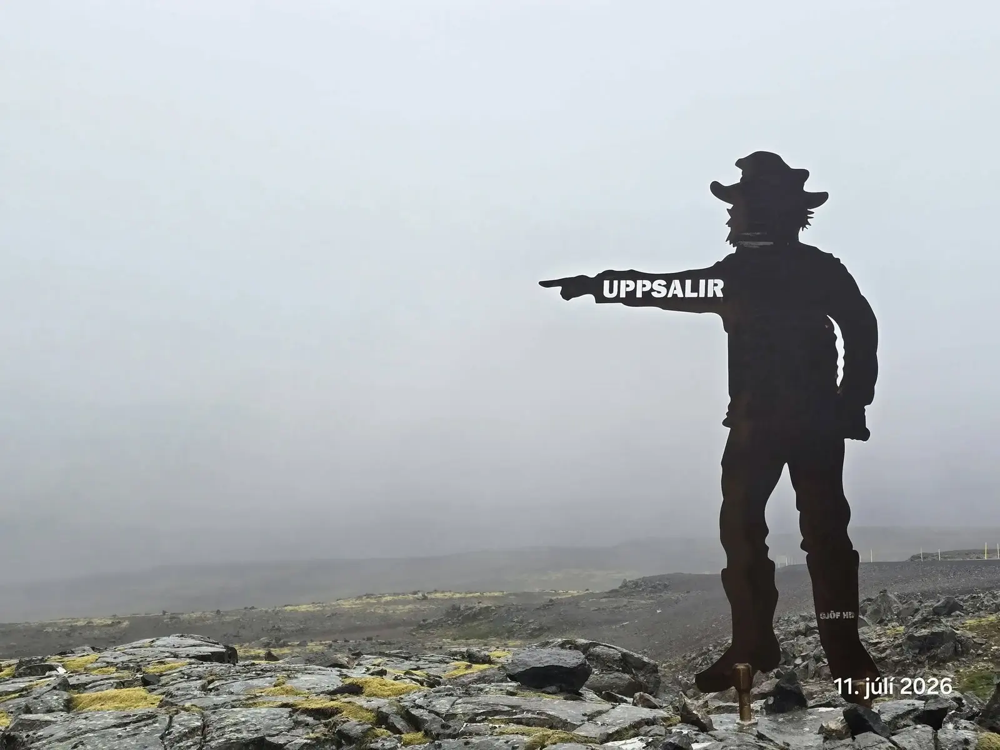
26. júní 2026
HD lauk uppbyggingu hátækniverkefnis á Húsavík á mettíma
HD hefur lokið uppbyggingu nýrrar tilraunaverksmiðju kanadíska tæknifyrirtækisins Syntholene Energy á Húsavík, þar sem þróuð er ný kynslóð tækni til framleiðslu vetnis og kolefnish…
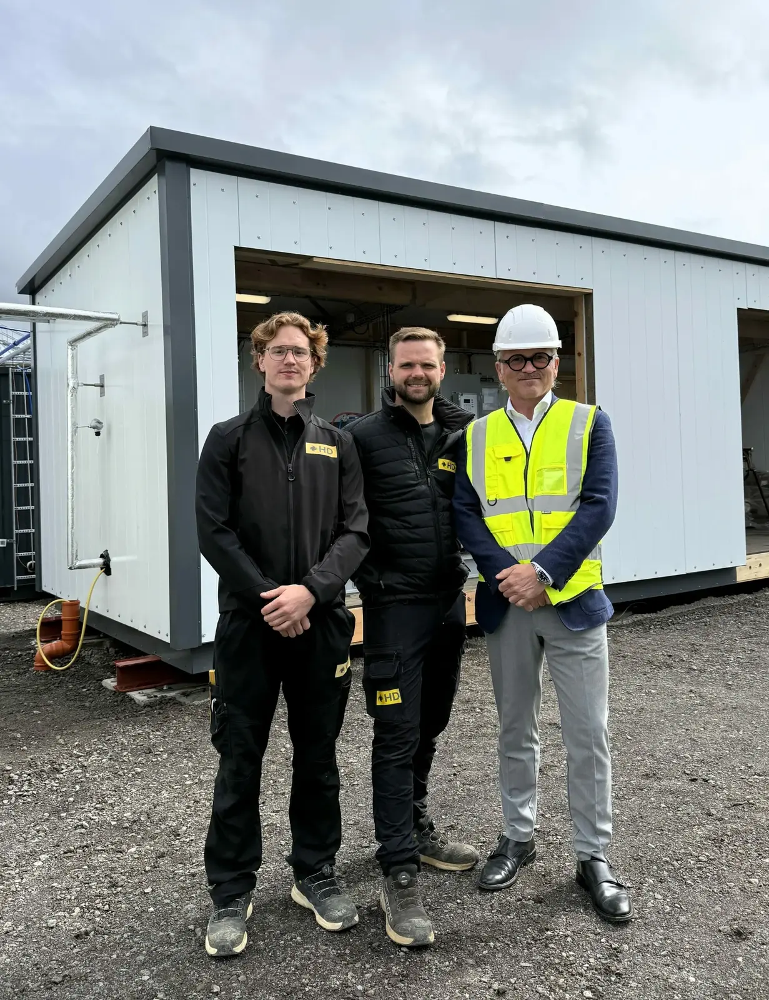
5. júní 2026
HD Participating at World Geothermal Congress
HD Industrial & Technical Services, an Iceland-based engineering and service company with more than 3 decades of experience supporting critical energy infrastructure, is presenting…
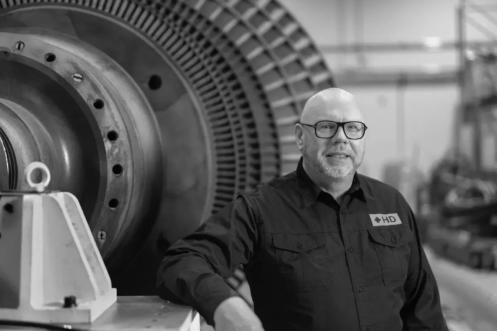
19. maí 2026
HD hlýtur Þekkingarviðurkenningu
HD ehf. hefur hlotið Þekkingarviðurkenningu Félags viðskipta- og hagfræðinga (FVH) 2026 fyrir framúrskarandi vegferð í uppbyggingu þekkingardrifinnar iðn- og tækniþjónustu. Viðurke…
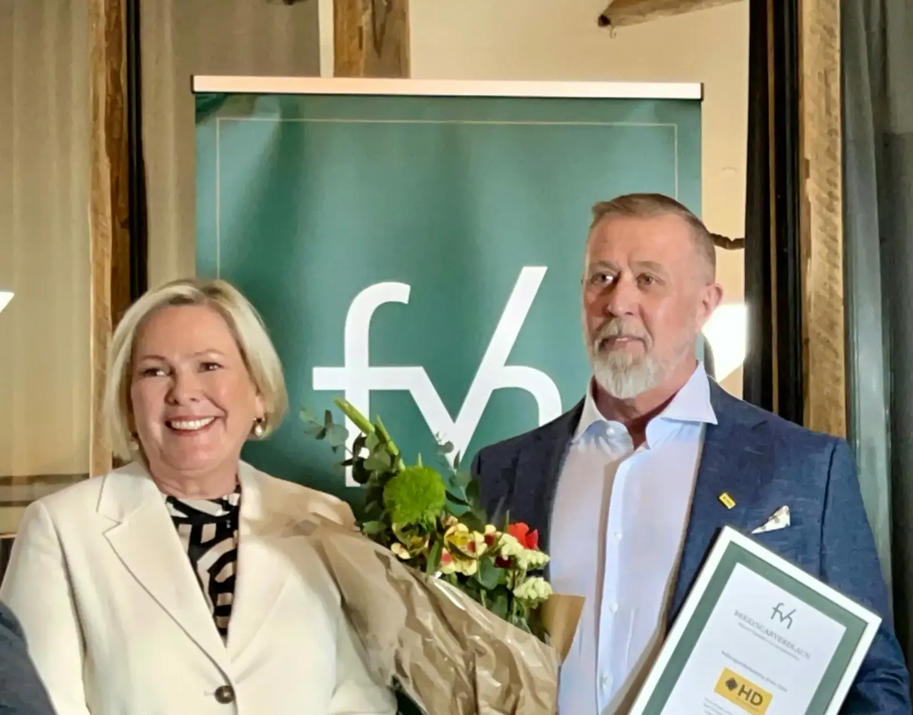
6. maí 2026
Aukin áhersla á ástandsdrifið viðhald
Þegar rekstraröryggi skiptir öllu geta bilanir í lykilbúnaði haft verulegar afleiðingar. Bilun í heitavatnsdælu er ekki aðeins tæknilegt vandamál heldur getur hún valdið því að það…
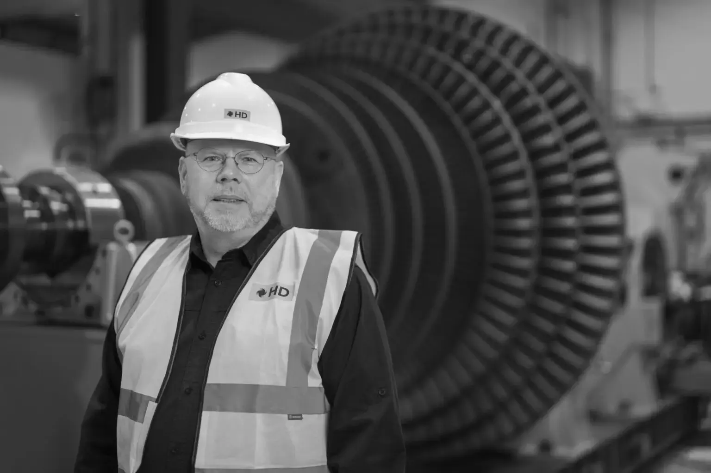
28. apríl 2026
Öflug þjónusta við tjakkaviðgerðir hjá HD
HD býður upp á faglega þjónustu við nýsmíði, viðgerðir og viðhald á vökva- og lofttjökkum. Með áralangri reynslu og sterkri þekkingu á efnisvali leggur fyrirtækið áherslu á lausnir…
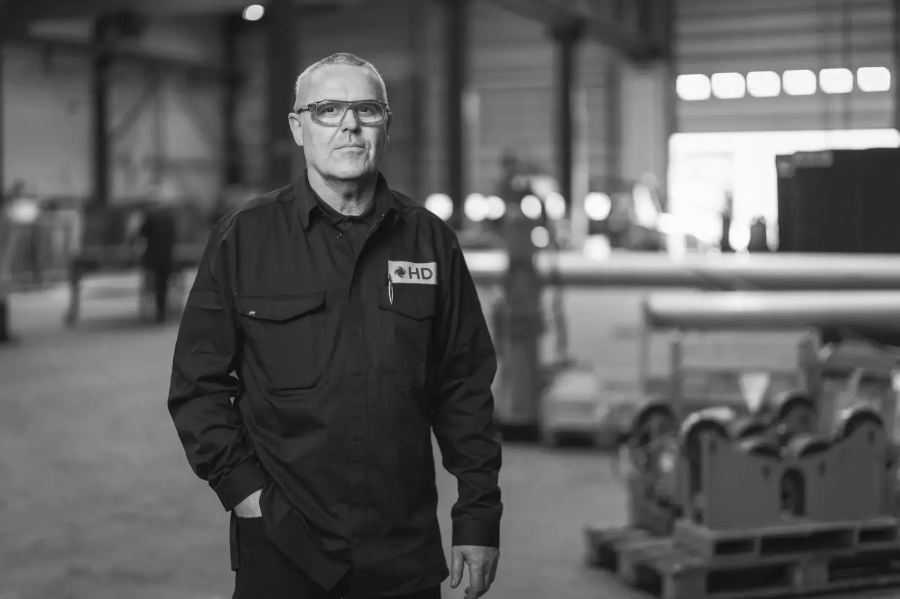
23. apríl 2026
Grein um HD birt í Cool Atlantic
Nýverið birtist grein um lausnir HD í fiskeldi í tímaritinu Cool Atlantic, þar sem fjallað er um mikilvægi dælulausna og ástandsdrifins viðhalds í nútíma rekstri eldisstöðva.
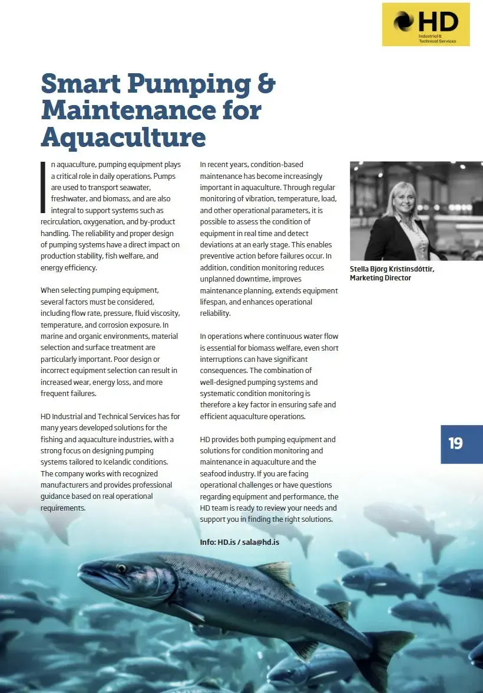
17. apríl 2026
Sérfræðingar orkugeirans kynna sér framþróun í rótor- og leiðiskófluviðgerðum
Góðir gestir heimsóttu HD Iðn- og tækniþjónustu í Mosfellsbæ þar sem kastljósið var á framþróun í sérhæfðri starfsemi fyrirtækisins á sviði rótor- og leiðiskófluviðgerða.
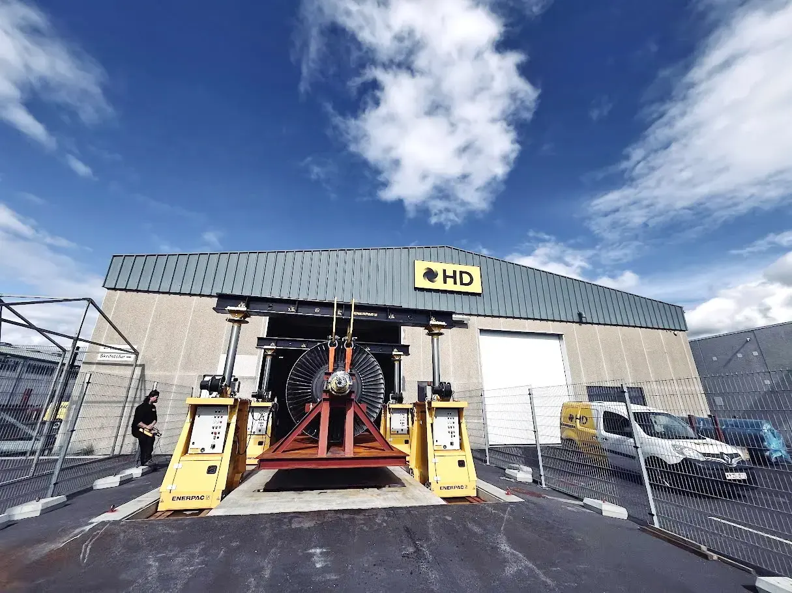
10. apríl 2026
HD með bás á Seafood Expo Global í Barcelona
Fulltrúar HD hafa undanfarin ár lagt leið sína á Seafood Expo Global, en í ár var ákveðið að stíga skrefið til fulls og vera með eigin aðstöðu á sameiginlegum bás Íslandsstofu, þar…
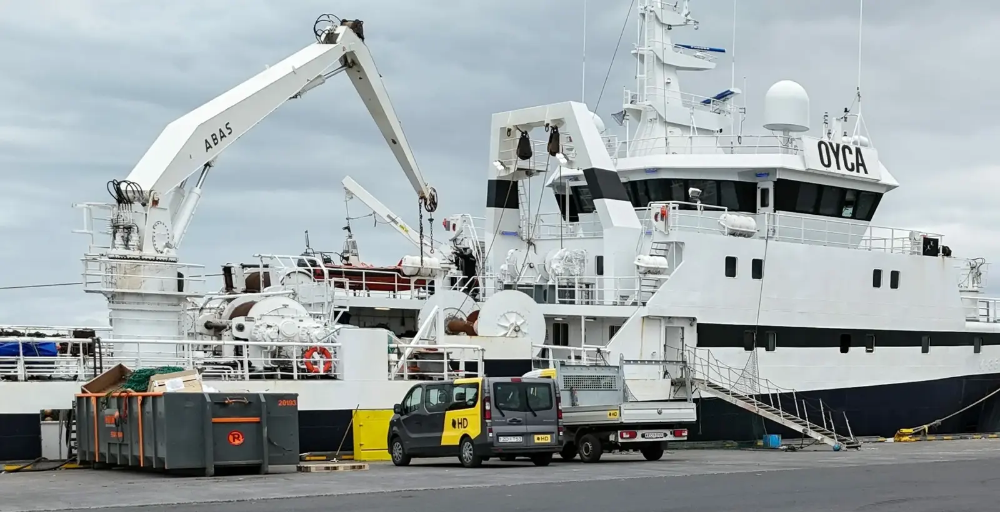
8. apríl 2026
Stækkun rótorverkstæðis eykur viðbragðsgetu jarðvarmavirkjana
HD Iðn- og tækniþjónusta hefur tekið í notkun stækkað rótorverkstæði á starfsstöð sinni í Mosfellsbæ og getur nú sinnt viðgerðum á tveimur jarðvarmarótorum samtímis. Með þessari up…
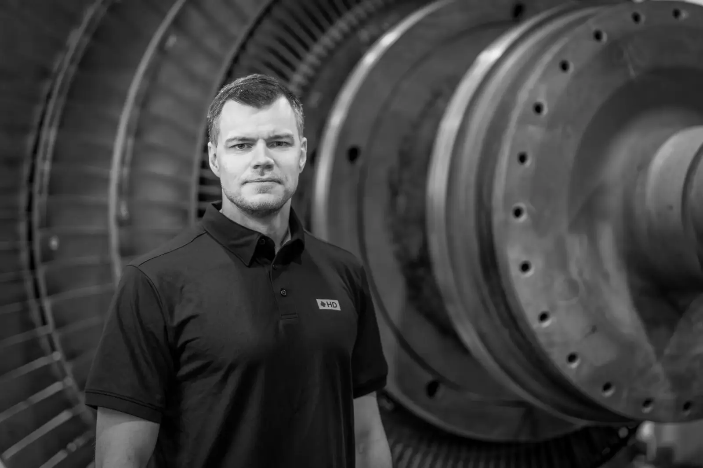
12. mars 2026
Þykktarmælingar skipa – mikilvægt verkfæri í öryggiseftirliti
Reglulegar þykktarmælingar eru lykilþáttur í öryggiseftirliti skipa og veita skýra mynd af ástandi stálskrokks og burðarvirkja. Slíkar mælingar eru í mörgum tilvikum hluti af lögbu…
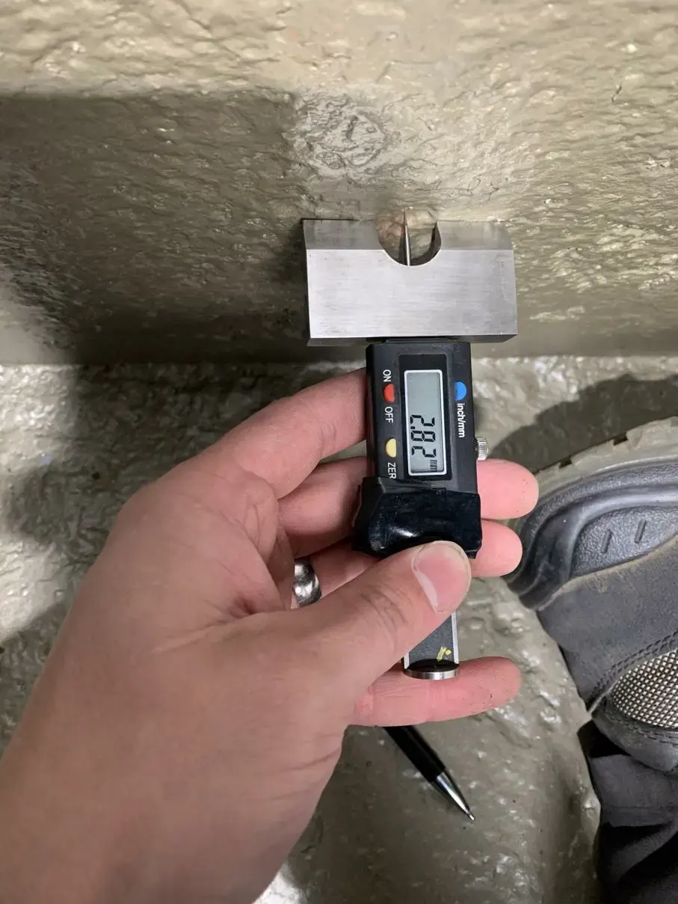
25. febrúar 2026
HD styrkir viðhalds- og eftirlitsþjónustu
HD hefur fengið umboð fyrir sænska tæknifyrirtækið pureSignal, sem sérhæfir sig í háþróuðum lausnum fyrir ástandsvöktun og ástandsdrifið viðhald á vélbúnaði. Með samstarfinu styrki…
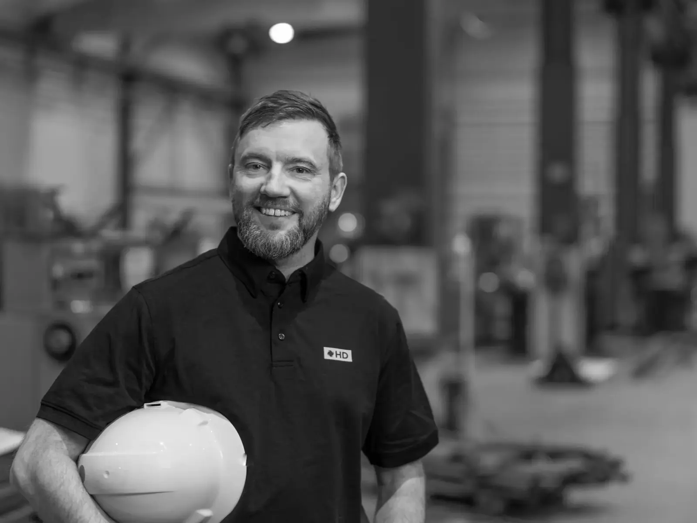
6. febrúar 2026
Valgeir Pétursson sviðsstjóri nýs tæknisviðs HD
Samlegð og ávinningur fyrir viðskiptavini Með sameiningunni er samspil þróunar, hönnunar, vöktunar og ástandsgreininga styrkt. Teymin munu vinna þéttar saman að sérhæfðum lausnum …

6. febrúar 2026
HD styrkir forystu sína og skerpir áherslur
HD hefur á undanförnu misseri gert markvissar breytingar á forystu fyrirtækisins með ráðningu nýrra stjórnenda. Með þessum skrefum er lögð aukin áhersla á tæknilega forystu, markað…
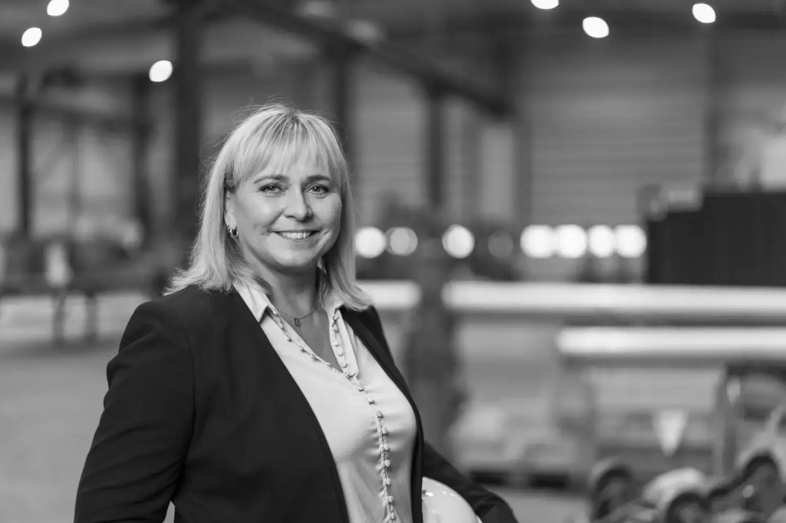